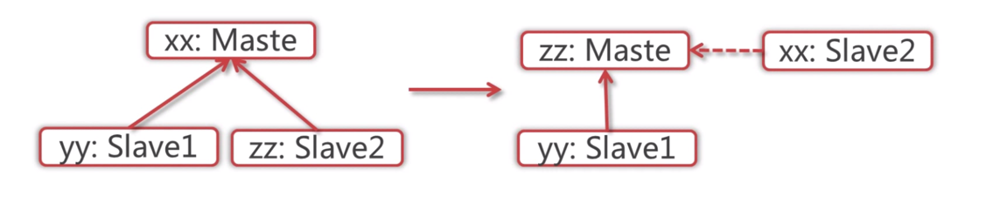
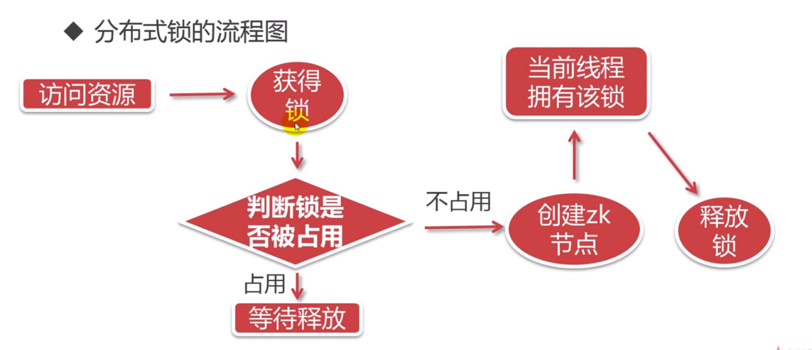

zookeeper基本介绍
zk.cfg文件
* tickTime: zookeeper中使用的基本时间单位, 毫秒值.
* dataDir: 数据目录. 可以是任意目录.
* dataLogDir: log目录, 同样可以是任意目录. 如果没有设置该参数, 将使用和#dataDir相同的设置.
* clientPort: 监听client连接的端口号,默认2181.
* initLimit: 允许从节点链接并同步到Master主节点的初始化链接时间，以tickTime的整数倍
* syncLimit：master主节点与从节点之间发送消息和应答时间，以tickTime的整数倍
启动与停止
./bin/zkServer.sh start
./bin/zkServer.sh status
./bin/zkServer.sh stop
./bin/zkCli.sh 客户端连接
zookeeper基本数据结构
是一个树形结构，类似于前端的tree.js
每个节点称为znode,也可以有子节点，也可以有数据
可以有临时节点和永久节点
每个节点有自己的版本号，可以通过命令行显示
每当节点数据发生变化，该节点的版本会自动累加
每个zk节点存储的数据不易过大
节点可以设置acl，可以通过权限来限制用户的访问
zookeeper的作用
- master的选举，首脑模式，保证集群高可用
- 统一配置文件管理，只需要部署一台服务器，就可以把相同的配置文件同步到其他服务器。
- 发布与订阅，类似于消息队列
- 提供分布式锁，分布式环境中不同进程之间争夺资源，类似于多线程中的锁。
- 集群管理，集群中保持数据的一致性。
zookeeper的基本命令
./zkCli.sh 打开zk的客户端命令行后台
get 与set命令
create 与 delete命令
zk session的基本原理
客户端与服务端之间的连接存在会话
每个会话都可以设置一个超时时间
心跳结束，session过期
心跳机制：客户端向服务端的ping包请求
zk watcher机制
针对每个节点的操作，都有一个watcher
当监控的某个对象发生了变化，则触发watcher事件
zk的watcher是一次性的，触发之后就销毁了
父节点和子节点都能触发watcher事件
给父节点设置watcher事件
stat path watch
get path watch
set path watch
给子节点设置watcher事件
ls path watch
watcher事件的类型
- NodeCreated
- NodeDataChanged
- NodeDeleted
- NodeChildrenCreated
watcher的使用场景
- 统一资源配置
zk的acl权限
zk的权限通过[schema:id:permissions]来构成权限列表
schema:代表某种权限机制
id:表示允许访问的用户
permissions：表示权限组合字符串
crdwa权限
c:create 创建子节点的权限
r:read 获取当前节点子节点
w:write 设置节点数据
d:delete 删除子节点
a:admin 设置权限
acl的使用场景
- 开发人员和测算环境的隔离，开发人员无法操作测试库
- 生产环境制定相关的ip可以访问相关节点
zk的四字命令
需要使用nc命令
echo [commond] | nc [ip] [port]
- [stat] 查看zk的状态信息
- [ruok] 查看zkserver是否启动
- [dump] 列出未经处理的会话和临时节点
- [cons] 展示连接到服务端的客户端信息
- [mntr] 查看zk的健康信息
zk的集群
zk集群是主从节点，心跳机制(选举模式)

集群搭建
- 配置数据文件myid 1/2/3 对应server1/2/3 ``` myid 在data目录下
//以下配置放在/conf/zk.cfg目录下
server.1=127.0.0.1:2888:3888
server.2=127.0.0.1:2889:3889
server.3=127.0.0.1:2890:3890
- 通过```./zkCli.sh -server [ip]:[port]
zk的客户端api操作
基本的示例
public class ZKConnect implements Watcher {
final static Logger log = LoggerFactory.getLogger(ZKConnect.class);
public static final String zkServerPath = "127.0.0.1:2181";
// public static final String zkServerPath = "192.168.1.111:2181,192.168.1.111:2182,192.168.1.111:2183";
public static final Integer timeout = 5000;
public static void main(String[] args) throws Exception {
/**
* 客户端和zk服务端链接是一个异步的过程
* 当连接成功后后，客户端会收的一个watch通知
*
* 参数：
* connectString：连接服务器的ip字符串，
* 比如: "192.168.1.1:2181,192.168.1.2:2181,192.168.1.3:2181"
* 可以是一个ip，也可以是多个ip，一个ip代表单机，多个ip代表集群
* 也可以在ip后加路径
* sessionTimeout：超时时间，心跳收不到了，那就超时
* watcher：通知事件，如果有对应的事件触发，则会收到一个通知；如果不需要，那就设置为null
* canBeReadOnly：可读，当这个物理机节点断开后，还是可以读到数据的，只是不能写，
* 此时数据被读取到的可能是旧数据，此处建议设置为false，不推荐使用
* sessionId：会话的id
* sessionPasswd：会话密码 当会话丢失后，可以依据 sessionId 和 sessionPasswd 重新获取会话
*/
ZooKeeper zk = new ZooKeeper(zkServerPath, timeout, new ZKConnect());
log.warn("客户端开始连接zookeeper服务器...");
log.warn("连接状态：{}", zk.getState());
new Thread().sleep(2000);
log.warn("连接状态：{}", zk.getState());
}
@Override
public void process(WatchedEvent event) {
log.warn("接受到watch通知：{}", event);
}
}
zk常用的java客户端
- zk api原生
- zk client
- Apache curator
zookeeper 原生api的不足之处
- 超时重连不会自动，需要手动实现
- watcher 注册一次就会失效
zookeeper的分布式锁
目的：保证数据一致性
一般的流程：

可能出现的状况
业务1进来 -> 获取锁(创建临时节点) -> 业务操作 -> 释放锁(删除节点)
业务2进来 -> 获取锁失败 -> 添加释放锁监听 -> 等待锁释放